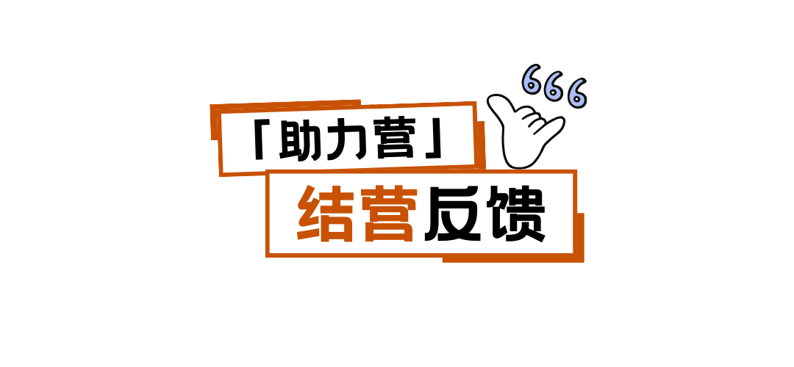
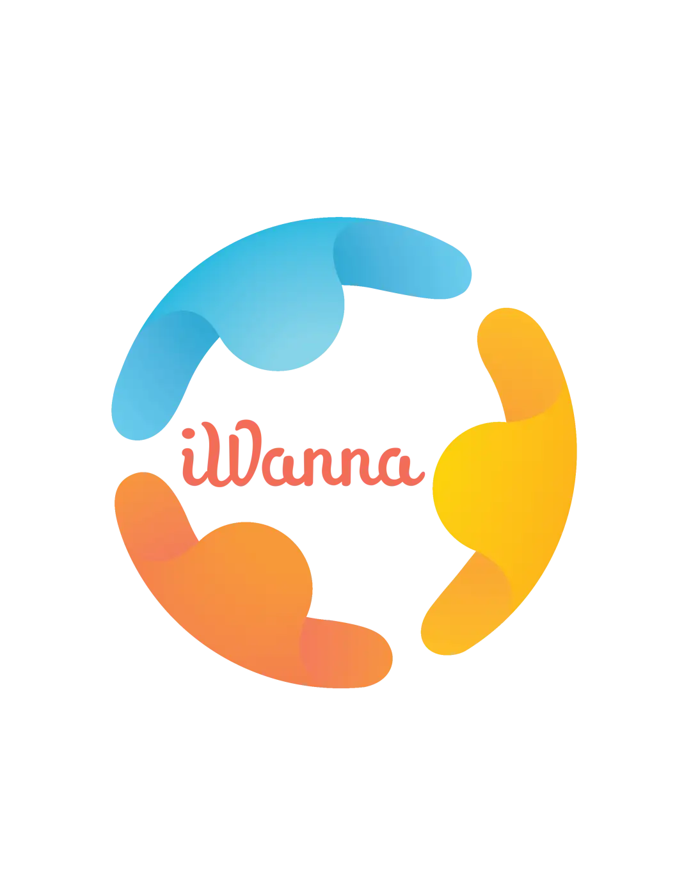

2024年，经过iWanna团队五年的研发和课程迭代，升级版「iWanna2024心理生涯与硕博申请助力营」将于4月15日正式开营！「2024助力营」是由大咖讲座、导师答疑、生涯工作坊、心理人社群、独家资讯五大核心板块组成在线课程和社群服务，服务时长约为
4.5个月。「2024助力营」将以“探索生涯新赛道，赋能未来心理人”为主题，全程以心理职业生涯发展为导向，做营员们的心理留学加速器。
📢📢📢开营前，想提前感受讲座氛围吗？「2024助力营」预热活动
一定不要错过！第二场预热活动《美国心理学博士的职业选择和日常工作：临床工作篇》将于3月26日上线（详情见后文）！营员们
前期将通过沉浸式吸收心理学科、心理行业前沿资讯，快速拓展个人视野，打破行业信息差，拒绝信息不对称；中期将在心理从业者的带领下，打通升学与生涯，深度自我探索，寻找适合自己的“心理人”定位；后期将从理论到实践，申请不迷茫，做好准备实战2025Fall申请季。在高校招生官、资深从业者等嘉宾讲座中，iWanna将邀请更多权威招生官，以及参与海外招生工作的导师，为营员们带来最一线、最新鲜的项目咨询与录取情报。
在导师答疑板块中，「2024助力营」将增加驻场导师轮换频次，尽可能覆盖更多的心理学细分专业、前沿的交叉专业。
导师答疑细分专业方向覆盖：心理咨询、学校咨询等细分咨询、社会工作、艺术治疗、临床心理、发展教育心理、认知心理、社会心理、心理测量、工业组织、公共卫生、UI/UX……
导师答疑国家地区覆盖：美国、加拿大、英国、中国香港、中国澳门、澳大利亚、欧洲多国（如荷兰、德国、瑞士）、新西兰……
「2024助力营」导师集中答疑分为硕士和博士专场，分别邀请了iWanna明星导师：佛罗里达州立大学临床心理全奖博士生Isis和新加坡国立大学社会教育心理学博士Christy。超强阵容真人导师团，让营员们真正站在”前辈的肩膀上“，
探索自己与心理学的关系，并有充分机会觉察自己投身于心理行业的内在动机。在心理生涯工作坊板块中，营员们将在导师的指导下，体验从理论到实践的心理职业生涯规划，少走弯路，找到适合自己的发展方向。此外，结合联合国可持续发展目标的理念，我们期待和营员们一起在心理人社群中拥抱多元、互助共赢，创建一个包容与支持的友好环境。「2024助力营」还将涉及全球多国家、多地区，带给营员们身临其境的“环球体验”，从iWanna看见人生更多可能性。
更重要的是，「2024助力营」的理念并不是仅仅止步于个体的“一亩三分地”，而是希望从更宏观的人类命运共同体的视角，激发营员们作为未来心理人的使命感，鼓励营员们拥抱更充盈、更深刻的精神世界。更多具体嘉宾详情和分享主题，以及社群细节将会在之后的推送中陆续发布，近期还会有
【助力营品牌产品发布会】直播活动，敬请期待！
如果你感到
困于心理行业信息壁垒
不确定自己是否适合心理行业
对心理职业前景和准入门槛充满疑惑
受限于海内外心理行业差距
迷茫心理选校与细分方向
热爱心理学但担忧就业环境
……
如果你希望
获取心理领域发展前沿资讯
探索海内外心理赛道的新可能
对话招生官、资深心理前辈
规划心理留学、执业路径
结识优秀的心理同僚
……
我们欢迎
海内外心理相关专业的同学
跨专业跨行业对心理学感兴趣的伙伴
关心孩子的职业生涯的家长
有心理转行计划的职场人
想拓展人生赛道的选手
……

自2020年iWanna助力营开办以来，我们深感荣幸地收获了一期又一期营员们的青睐与好评。多数营员反馈最受益于与导师的链接、海外心理硕博申请和职业发展的资讯内容。同时，助力营多样化的活动安排也令营员们印象深刻，不同心理领域从业者的分享赋予营员们更多元、开放的视角，从深度和广度上拓展了对心理行业的理解。更难得的是，iWanna助力营的含金量、性价比和实用取向收获了一致肯定：【高含金量】：五年研发与迭代，“从0到1”全面提升了对心理行业认知，对职业生涯规划有里程碑式的启发性！【高性价比】：卓越一流的师资团队、专业前沿的课程内容、多元有爱的朋辈社群、独家内部参考资料，真正做到每个环节都是超值体验！【高实用取向】：从申请选校、文书思路，到背景提升资源、面试核心要点，覆盖面广泛，只为助力营员们在实战中斩获梦校Offer！*往期营员录取捷报：
哈佛大学、哥伦比亚大学、宾夕法尼亚大学，西北大学、纽约大学、波士顿学院、范德堡大学、里海大学、约翰霍普金斯大学、爱丁堡大学、多伦多大学、香港大学、南加州大学、波士顿大学等。项目：心理咨询方向、社会工作、家庭婚姻治疗、临床心理、学校心理、人类发展、测量与统计、应用心理学等。学位：Master、PhD和PsyD。
本期开营之前，为让更多有志于心理领域的伙伴们了解和感受助力营，我们将于北京时间3月26日举办了「2024助力营」第二场免费预热活动，
讲座嘉宾周晌昀导师将在线与大家交流、答疑，欢迎对助力营感兴趣的伙伴们扫描下方二维码，报名参加！
「2024助力营」已开启报名，原价1299元，早鸟报名仅699元！快来点击购买，即刻下单入营吧！*申请全流程VIP学员免费享有助力营权益，详情咨询文末客服老师。

iWanna国际心理人作为全网领先心理学留学辅导、全球心理人发展平台，拥有100+位全球多国多方向心理学专业师资，服务范围涵盖15+心理领域细分方向，获得95.96%的服务满意度，学员申请成功率达到94.2%。